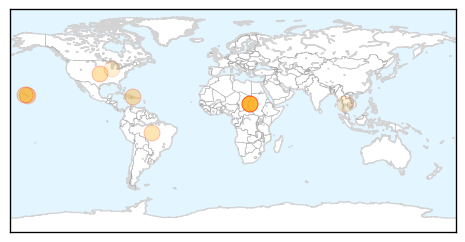
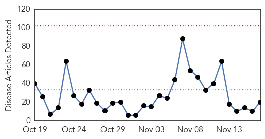
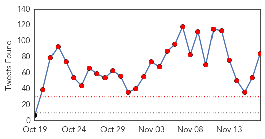
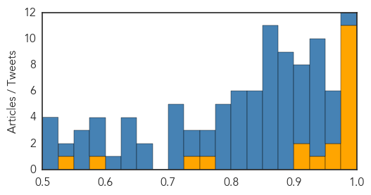

Dengue Fever
30-Day Web Trend
0 alerts, 0 warnings

30-Day Twitter Trend
12 alerts, 0 warnings

Article Locations
Article Confidences

Top Articles:
- 1.000
- Keep calm and prevent dengue
- 0.994
- 107 cases of dengue fever confirmed on Hawaii Island
- 0.993
- Sudan Vision Daily
- 0.991
- Dengue fever kills 118, infects 381 people in Darfur
- 0.988
- Darfur dengue update: 118 deaths, decline expected - Sudan
- 0.977
- Plans beefed up to mitigate against outbreak of Zika here
- 0.975
- What is dengue fever and how to protect yourself
- 0.939
- State Minister for Health reaffirms cases of dengue fever in five states in Darfur - Sudan
- 0.930
- ‘No native case of dengue in Nilgiris’
- 0.884
- Health Authorities Warn of the ZIKA Virus
- 0.655
- Dengue Fever Count Up 18 Since Friday
- 0.575
- Govt. hospitals in Ballari facing shortage of doctors
- 0.523
- Honolulu, Hawaii News and Weather
- 0.510
- Thai academic denies rumor of new dengue strain
Top Tweets:
-
No tweets found for Nov 17, 2015
Ebola
30-Day Web Trend
0 alerts, 0 warnings

30-Day Twitter Trend
29 alerts, 0 warnings

Article Locations

Article Confidences
Top Articles:
- 1.000
- Last known Ebola patient in West Africa recovers
- 1.000
- Guinea Was Declared Ebola Free
- 1.000
- Guinea, Last Nation With Ebola, May Soon Be Declared Free of Virus
- 1.000
- Guinea's last Ebola patient released
- 0.999
- Last known Ebola case in Guinea recovers
- 0.999
- Last known Ebola case in Guinea recovers: MSF
- 0.999
- Sierra Leone Declared Ebola-Free
- 0.997
- Sierra Leone declared Ebola free - Sierra Leone
- 0.997
- Ebola Virus Found in 'Former' Patient's Eye
- 0.996
- Ebola patient in Dallas turns critical, no new US cases
- 0.993
- Changes in Screening and Monitoring of Travelers Returning from Sierra Leone
- 0.959
- Building Defenses Against Future Ebola Outbreaks
- 0.956
- the recovery starts now « Awoko Newspaper
- 0.935
- Sierra Leone declared free of Ebola
- 0.916
- Ultra-modern MCH Aide Training School for Waterloo
- 0.908
- Mia Beers: Helping in West Africa to stop the spread of a deadly disease
- 0.763
- Britain ends military support for Ebola fight in West Africa
- 0.726
- Head of Civil Service, Dr. Ernest Surur, Calls for Accurate Human Resource Data Base for effective planning and service delivery.
- 0.594
- UNICEF supports the construction of a school to train maternal and child health aides in Freetown
- 0.535
- Public Health Ignored as HIV Spreads
Top Tweets:
- 0.998
- Optofluidic Systems Detect Ebola, Flu Viruses - https://t.co/uRUYi9CFjj ebola
- 0.998
- Ebola virus pose no threat in West Africa - https://t.co/f5BpktgdxG ebola
- 0.996
- Guinea says has no Ebola cases after last patient recovers - https://t.co/pK3KwiDMjy ebola
- 0.996
- Guinea says has no Ebola cases after last patient recovers - https://t.co/lQx5uTfYW2 ebola
- 0.995
- ebola - https://t.co/yLNO0XhLyT ebola
- 0.995
- ebola - https://t.co/9xV38SyFFi ebola
- 0.995
- Guinea says has no Ebola cases after last patient recovers - Reuters https://t.co/8LnIdLxcxG ebola EVD
- 0.995
- Ebola outbreak may be nearing end in Guinea - https://t.co/Af7QVTSDOB ebola
- 0.995
- Ebola decontamination webinar - https://t.co/iUdvPkIPd3 ebola
- 0.993
- According To Guinea, No Ebola Cases After Last Patient Recovers - https://t.co/8ZnjpqSxek ebola
- 0.992
- No Ebola Cases In Guinea After Last Patient Recovers - https://t.co/bNhYfbd70u ebola
- 0.992
- Guinea's last known ebola patient recovers and leaves hospital - https://t.co/vhN6LmM3mr ebola
- 0.992
- Guinea's Last Ebola Patient Recovers From Hospital - https://t.co/hro8oD4NFY ebola
- 0.992
- Guinea reports last known Ebola patient recovers - https://t.co/I0D3btMTGH ebola
- 0.992
- Guinea reports last known Ebola patient recovers - https://t.co/6vVGKJiZnE ebola
- 0.991
- Sierra Leone is now Ebola-free - https://t.co/QyahroNfoN ebola
- 0.991
- Guinea says last known Ebola patient recovers, leaves hospital - https://t.co/t8h6cB1BYG ebola
- 0.991
- Guinea says last known Ebola patient recovers, leaves hospital - https://t.co/ps3s9JtPTl ebola
- 0.991
- Guinea says last known Ebola patient recovers, leaves hospital - https://t.co/bg21ij2kah ebola
- 0.990
- Guinea's last known Ebola patient released - https://t.co/qNqYhCOnWc ebola
- 0.990
- Guinea's last known Ebola patient released - https://t.co/jRq6rxuCPd ebola
- 0.990
- Guinea's last Ebola patient released - https://t.co/xxQUC2shXs ebola
- 0.989
- Guineas Last Ebola Patient Released - https://t.co/4ircRAxxNg ebola
- 0.986
- Ebola Lives on After Recovery - https://t.co/1GEPDC37EC ebola
- 0.985
- Guinea's last Ebola patient released from care - https://t.co/2ldYzCyq0X ebola
- 0.984
- Noxious' Ebola Church TGT - https://t.co/LfPc0zUnaA ebola
- 0.976
- Last known Ebola case in Guinea recovers: MSF - https://t.co/RN5C4D5WC2 ebola
- 0.976
- Last known Ebola case in Guinea recovers: MSF - https://t.co/IRQGRXiHRe ebola
- 0.975
- Guinea says last known Ebola patient cured, remains under surveillance - https://t.co/oXxEKYhoZH ebola
- 0.972
- Covering the Ebola Epidemic: A Look Back - https://t.co/saslavBteV ebola
- 0.971
- Guinea says last-known Ebola patient released from hospital - https://t.co/rpKIWxObii ebola
- 0.970
- Guinea's Last Known Ebola Patient Discharged From Treatment Center - https://t.co/O0ey1FkOyE ebola
- 0.970
- Guinea's Last Known Ebola Patient Discharged From Treatment Center - TIME https://t.co/qVRqk94O4c ebola EVD
- 0.964
- Sierra Leone declared Ebola free - https://t.co/xwn5GTSzW5 ebola
- 0.964
- Sierra Leone declared Ebola free - https://t.co/8tpPluAVdT ebola
- 0.964
- Sierra Leone Declared Ebola-Free - https://t.co/68xMIPReDr ebola
- 0.963
- Xenex Germ-Zapping Robot™ Destroys Ebola Virus & Anthrax Spores in New Study Performed at ... - https://t.co/qRbiwRKCTI ebola
- 0.962
- Xenex Germ-Zapping Robot™ Destroys Ebola Virus & Anthrax Spores in New Study ... - Business Wire (... https://t.co/g2opsrApo0 ebola EVD
- 0.961
- Ebola nurse Rebecca Stretch thanks the people of Carnforth for their good wishes in Sierra Leone - https://t.co/Rk0LyUxDnd ebola
- 0.955
- Last known Ebola patient, a baby girl, recovers - https://t.co/eX1D1OmP4R ebola
- 0.952
- Guinea: Last Known Ebola Patient Has Recovered and Is Released - https://t.co/FCCWuCfXLc ebola
- 0.952
- A soccer club for Ebola survivors is fighting stigmas in Sierra Leone - https://t.co/e9NjpIvJ7Q ebola
- 0.950
- Guinea Begins 'End to Ebola' Countdown - https://t.co/e3vHGDBJQs ebola
- 0.950
- Guinea Begins 'End to Ebola' Countdown - https://t.co/HTvo2GOE3o ebola
- 0.949
- Tine De Marez - https://t.co/u95O98wvik ebola
- 0.948
- Guinea's last known ebola patient recovers and leaves hospital - https://t.co/9p21lKLIva https://t.co/TgWjxLFQrU ebola EVD
- 0.948
- Countdown to end of Ebola begins in Guinea - https://t.co/eS04EfGrmy ebola
- 0.947
- OFFICIAL CORRECTION-Guinea says last known Ebola patient cured, remains under surveillance - https://t.co/P5YtLW1DUI ebola
- 0.947
- OFFICIAL CORRECTION-Guinea says last known Ebola patient cured, remains under surveillance - https://t.co/Gu3zXoO3lm ebola
- 0.945
- Ebola: our Infection Prevention & Control Manager talks about his time in Sierra Leone - https://t.co/cbxnox4C4P ebola
Showing top 50 tweets...